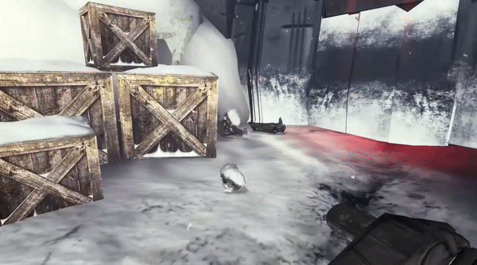
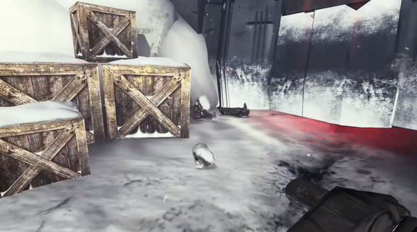

Mod:DB Youtube
What Is Infinite Finality?
A community driven mod for Half-Life 2 Episode 2 that attempts to retell the story of the cut expansion Half-Life 2 Episode 3. The team's current size is 22 volunteers who spend their free time working on the project when they can.
What I Did
Leadership
I was the overall lead of the project, making sure that people know what they needed to do, and what we had left to complete. I was also responsible for keeping the team friendly with one another, and taking members aside in private in order to prevent potential infighting.IceAxe
 



Programmed a melee weapon with a charging secondary attack. I integrated the animations and model into the game as well.
HoundEye


Ported an NPC from an older version of the engine, fixed older bugs from the npc, and gave it additional functionality so that mappers could setup additional sequences with them.
Task Management
I was in charge of making sure everyone knew what they were doing, keeping tabs on tasks and their progress, as well as keeping everyone focused on a central vision.
Articles
Every 2-3 months the team creates a developer article to keep the fan base up to date with progress. I was in charge of collecting everything we had done as a team, and writing the first draft of the article.
Accomplishments
We came in 4th place on "Best Upcoming Mods" on Mod:DB. This was voted on by the community.
Our channel has reached over 2.5k subscribers, with one of our videos reaching over 85k views.